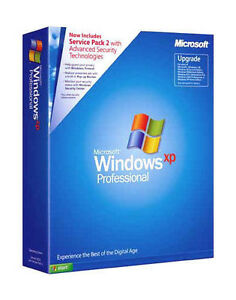
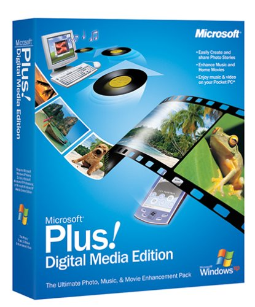
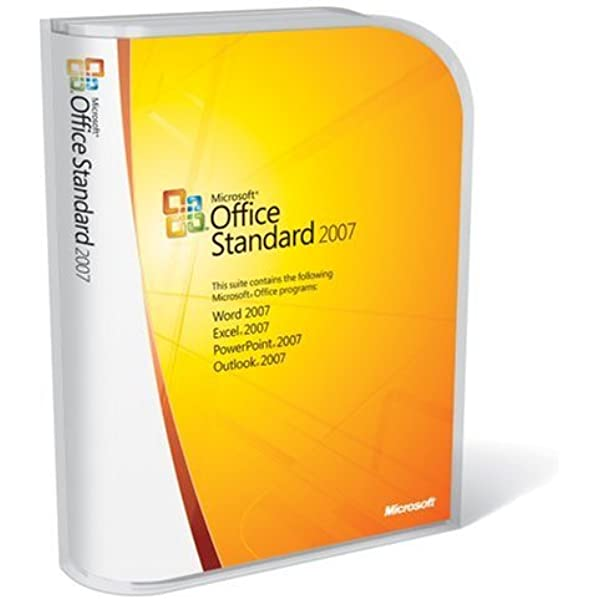
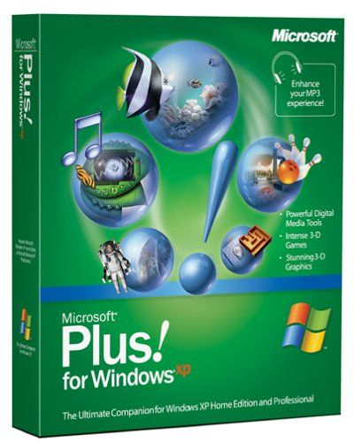
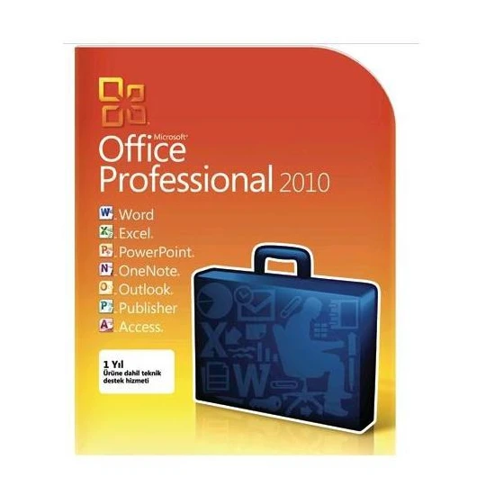
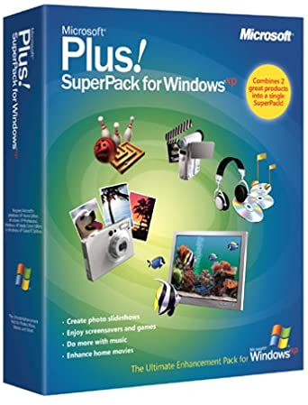

Windows XP
 
Windows XP is a major release of Microsoft's Windows NT operating system. It is the direct successor to Windows 2000 for professional users and Windows Me for home users.
It was released to manufacturing on August 24, 2001, and later to retail on October 25, 2001.
Development of Windows XP began in the late 1990s under the codename "Neptune", built on the Windows NT kernel explicitly intended for mainstream consumer use. An updated version of Windows 2000 was also initially planned for the business market.
However, in January 2000, both projects were scrapped in favor of a single OS codenamed "Whistler", which would serve as a single platform for both consumer and business markets. As a result, Windows XP is the first consumer edition of Windows not based on the Windows 95 kernel and MS-DOS.
Windows XP removed support for PC-98, i486 and SGI Visual Workstation 320 and 540 and will only run on 32-bit x86 CPUs and devices which use BIOS firmware.
Upon its release, Windows XP received critical acclaim, noting increased performance and stability (especially compared to Windows Me), a more intuitive user interface, improved hardware support, and expanded multimedia capabilities. Windows XP and Windows Server 2003 were succeeded by Windows Vista and Windows Server 2008, released in 2007 and 2008, respectively. Market share of Windows XP fell below 1% by the end of 2021, right when Windows 11 was released.
Mainstream support for Windows XP ended on April 14, 2009, and extended support ended on April 8, 2014. After that, the operating system ceased receiving further support. Windows Embedded POSReady 2009, based on Windows XP Professional, received security updates until April 2019
After that, unofficial methods were made available to apply the updates to other editions of Windows XP. Still, Microsoft discouraged this practice, citing incompatibility issues.
As of April 2022, 0.44% of Windows PCs[9] run Windows XP (on all continents, the share is below 1%), and 0.1% of all devices across all platforms run Windows XP. Windows XP is still very prevalent in many countries, such as Armenia, where 50–60% of computers use it.
Download Windows XP. Key = 47YK2-D8R6C-BPQBY-F4R3R-TVBTH
Plus Digital Media Edition

Marketed as "The Ultimate Photo, Music, and Movie Enhancement Pack for Windows XP", Microsoft launched Plus! Digital Media Edition along with Windows XP Media Center Edition. Plus! Digital Media Edition signified the first time Microsoft had released a second Plus! product based on the same base operating system. Microsoft Plus! Digital Media Edition was also the first Microsoft product to be made available for sale to consumers via e-commerce as full product download through online retailers.
Released on January 7, 2003, Plus! Digital Media Edition built upon two newly enhanced Windows XP core components: Windows Media Player and Windows Movie Maker 2. This product version focused more on utility features for photos, music and movies rather than including the more traditional Plus! features like themes, screen savers, and games.
Plus! Digital Media Edition includes:
Plus! Photo Story 2
Plus! Party Mode
Plus! Analog Recorder
Plus! CD Label Maker
Plus! Dancer
Plus! Audio Converter
Plus! Effects and Transitions for Windows Movie Maker 2
Plus! Alarm Clock
Plus! Sleep Timer
Plus! Skins for Windows Media Player 9 Series
Plus! Sync & Go for Pocket PC
Microsoft Plus! Digital Media Edition is the only version of Microsoft Plus! to require activation.
Windows XP Media Center Edition 2005 includes some of the themes and screensavers from Microsoft Plus! for Windows XP, as it retains the Aquarium, Da Vinci, Nature and Space themes. It also includes some applications from Microsoft Plus! Digital Media Edition, namely, Audio Converter, CD Label Maker, Dancer and Party Mode and the My Pictures Premium screensaver. A Windows Media Player skin called Darkling, developed by The Skins Factory is included, the skin is exclusive to Microsoft Plus! Digital Media Edition.
Download Plus Digital Media Edition
Office 2007

Microsoft Office 2007 (codenamed Office 12[5]) is an office suite for Windows, developed and published by Microsoft. It was officially revealed on March 9, 2006 and was the 12th version of Microsoft Office.
It was released to manufacturing on November 3, 2006;[6] it was subsequently made available to volume license customers on November 30, 2006,[7][8] and later to retail on January 30, 2007,[1] shortly after the completion of Windows Vista.
The ninth major release of Office for Windows, Office 2007 was preceded by Office 2003 and succeeded by Office 2010. The Mac OS X equivalent, Microsoft Office 2008 for Mac, was released on January 15, 2008.
Office 2007 introduced a new graphical user interface called the Fluent User Interface, which uses ribbons and an Office menu instead of menu bars and toolbars.[9] Office 2007 also introduced Office Open XML file formats as the default file formats in Excel, PowerPoint, and Word.
The new formats are intended to facilitate the sharing of information between programs, improve security, reduce the size of documents, and enable new recovery scenarios.[10]
Office 2007 is incompatible with Windows 2000 and earlier versions of Windows.
Office 2007 is compatible with Windows XP SP2 or later, Windows Server 2003 SP1 or later, Windows Vista, Windows Server 2008, Windows 7, Windows Server 2008 R2, Windows 8, Windows Server 2012, Windows 8.1, Windows Server 2012 R2 and Windows 10.
It is the last version of Microsoft Office to support the 64-bit versions of Windows XP and Windows Server 2003, the 32-bit versions of Windows XP SP2 and Windows Server 2003 SP1 and Windows Vista before SP1; as the following version, Microsoft Office 2010 only supports Windows XP SP3, Windows Server 2003 SP2, and Windows Vista SP1 or later.
Download Office 2007
Plus for XP

Marketed as "The Ultimate Companion for Windows XP", Microsoft Plus! for Windows XP was launched alongside the Windows XP operating system on October 25, 2001. This version of Plus! was created to show off the enhanced capabilities that Windows XP presented with its updated Windows Media Player and DirectX 3D core technologies. Continuing the feature categories of the previous Plus! products, the product features were desktop themes, screen savers, games, and utilities.
Plus! for Windows XP includes:
Plus! Themes (Aquarium, Nature, da Vinci and Space)
Plus! Screen Savers (Aquarium, Nature, da Vinci, Space, Robot Circus, Sand Pendulum, Mercury Pool and Plus! My Pictures Premium screensaver)
Plus! Voice Command for Windows Media Player
Plus! Personal DJ
Plus! MP3 Converter
Plus! CD Label Maker
Plus! Speaker Enhancement
Plus! 3D Visualizations for Windows Media Player (Oddworld: Munch's Odyssee, Maxx's Kingdom and Plus! Undersea Wonders)
Plus! Skins for Windows Media Player (Aquarium, Nature, da Vinci and Space)
Plus! Hyperbowl
Plus! Russian Square
Plus! Labyrinth
Download Plus for XP
Office 2010

Microsoft Office 2010 (codenamed Office 14[6]) is a version of Microsoft Office for Microsoft Windows unveiled by Microsoft on May 15, 2009, and released to manufacturing on April 15, 2010[1] with general availability on June 15, 2010[7] as the successor to Office 2007 and the predecessor to Office 2013. The macOS equivalent, Microsoft Office 2011 for Mac was released on October 26, 2010.
Office 2010 introduces user interface enhancements including a Backstage view that consolidates document management tasks into a single location. The ribbon introduced in Office 2007 for Access, Excel, Outlook, PowerPoint, and Word is the primary user interface for all applications in Office 2010 and is now customizable.[8][9][10] Collaborative editing features that enable multiple users to share and edit documents;[11] extended file format support;[6] integration with OneDrive and SharePoint;[11] and security improvements such as Protected View, a sandbox to protect users from malicious content[12] are among its other new features. It debuted Office Online, free Web-based versions of Excel, OneNote, PowerPoint, and Word.[13][14][15] A new Office Starter 2010 edition replaces Microsoft Works.
Office Mobile 2010, an update to Microsoft's mobile productivity suite was released on May 12, 2010 as a free upgrade from the Windows Phone Store for Windows Mobile 6.5 devices with a previous version of Office Mobile installed.[19][20][21]
Download Office 2010
Plus Superpack for XP

On October 19, 2004, Microsoft replaced its two separate Plus! products for Windows XP with a single combined version called the Microsoft Plus! SuperPack for Windows XP. There were no new features or functionality added nor are the two separate products integrated. On Windows XP Media Center Edition the Pack was not needed as it had included the Plus Pack features. The Plus! series has been discontinued, as some of its features have been integrated into Windows Vista and later Windows versions.
Download Plus Superpack for XP